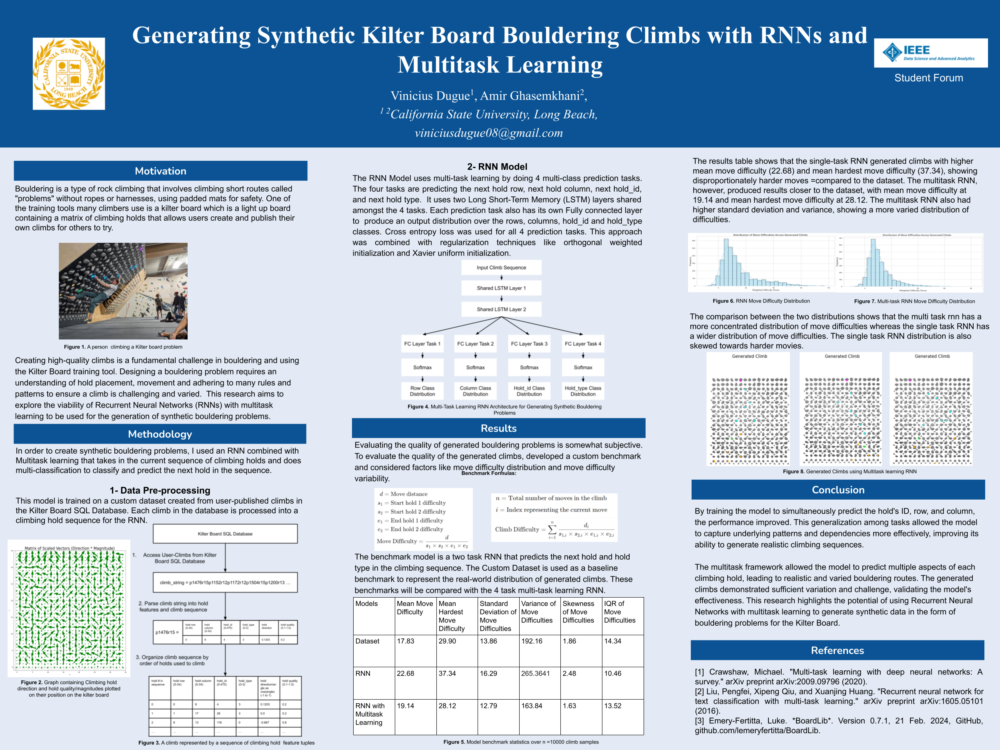

Peer-Reviewed Paper · 2025
Vibrotactile Navigational Cues May Be Effective for Specific Urban Air Mobility Operations
Schmitz, P., Dugue, V., et al.
August 2025 · NASA-funded UAM Research, San Jose State University Research Foundation
Co-authored research investigating whether vibrotactile feedback — directional haptic cues delivered through a tactor array — can effectively guide pilots during specific Urban Air Mobility (UAM) flight operations. The study evaluates pilot performance and workload under tactor-augmented conditions versus visual-only baselines.
UAMHuman FactorsVibrotactile FeedbackFlight Simulation
Peer-Reviewed Paper · AHFE 2025
Evaluating Simple Vibrotactile Feedback for Manual Glideslope Landings in Urban Air Mobility Simulation
Sarmiento, D., Nguyen, V., Dugue, V., Marayong, P.
November 2025 · AHFE 2025 Hawaii International Conference on Human Factors in Design, Engineering, and Computing
Follow-up study evaluating whether a simplified vibrotactile feedback scheme can support pilots performing manual glideslope landings in UAM simulation. Conducted in the CAVE VR system using a Unity-based UAM drone simulator with ART Dtrack body tracking and custom C# data-collection tooling, presented at the AHFE Hawaii Edition.
UAMGlideslopeVibrotactile FeedbackCAVE VRUnityAHFE 2025
Conference Presentation · IEEE DSAA 2024
AI Climb Generator: A Multi-Task LSTM for Kilter Board Route Generation
Vinicius Dugue
October 2024 · 2024 IEEE International Conference on Data Science and Advanced Analytics (DSAA), Machine Learning and Data Science Track

DSAA 2024 conference poster · click to enlarge
Accepted to and presented at the 2024 IEEE DSAA conference. The paper introduces a Multi-Task Learning LSTM model that generates climbing routes for the Kilter Board — an LED-lit climbing wall used by professional and amateur climbers worldwide. Trained in PyTorch on a corpus of 100,000+ user-generated climbs scraped from the Kilter community, with a custom preprocessing pipeline (Pandas, NumPy, SciPy) that converts route metadata into GPU-optimized tensors for CUDA-accelerated training.
At DSAA I presented the model's architecture, the dataset construction pipeline, and the generated-route evaluation methodology to an audience of ML researchers and practitioners, alongside live samples of model-generated routes rendered onto a Kilter Board layout. The work has since grown into a full-stack web app — Kilter AI — that lets climbers generate, view, and save custom routes.
Deep LearningLSTMMulti-Task LearningPyTorchCUDAIEEE DSAA